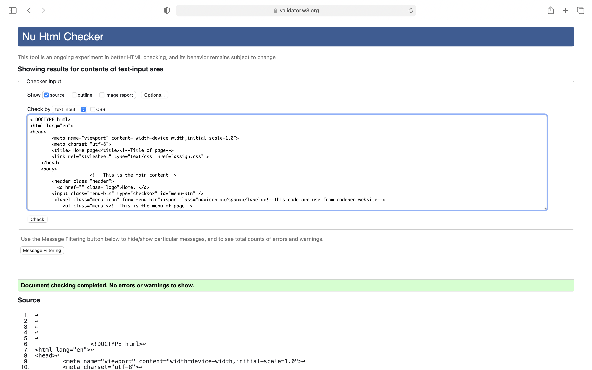
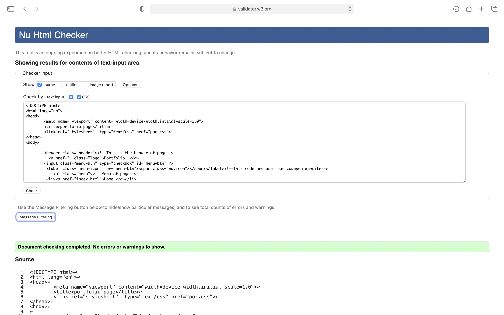
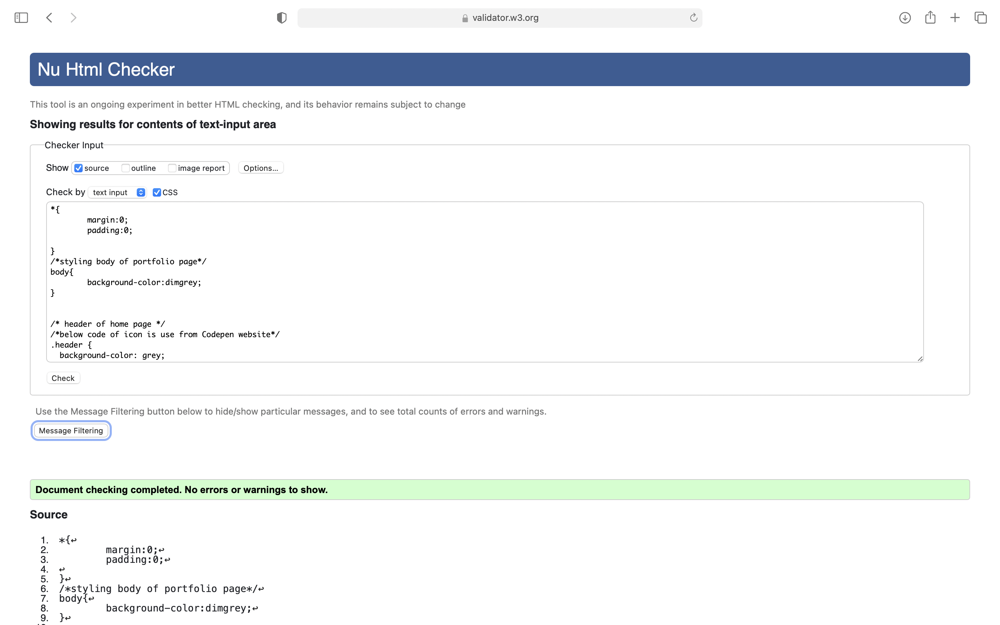
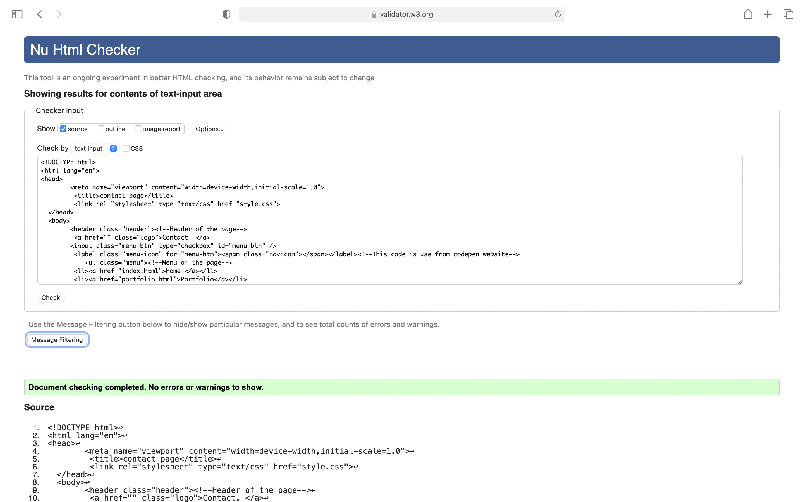
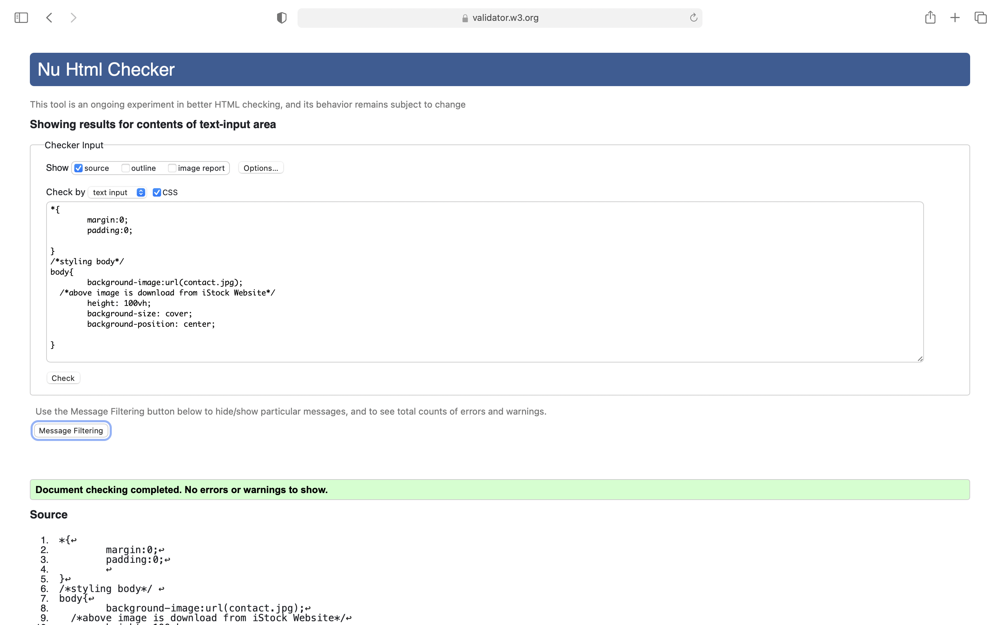
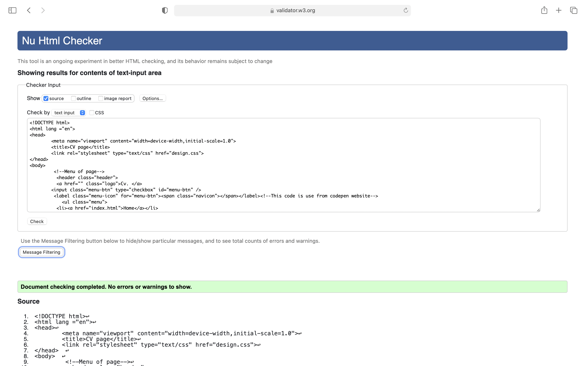
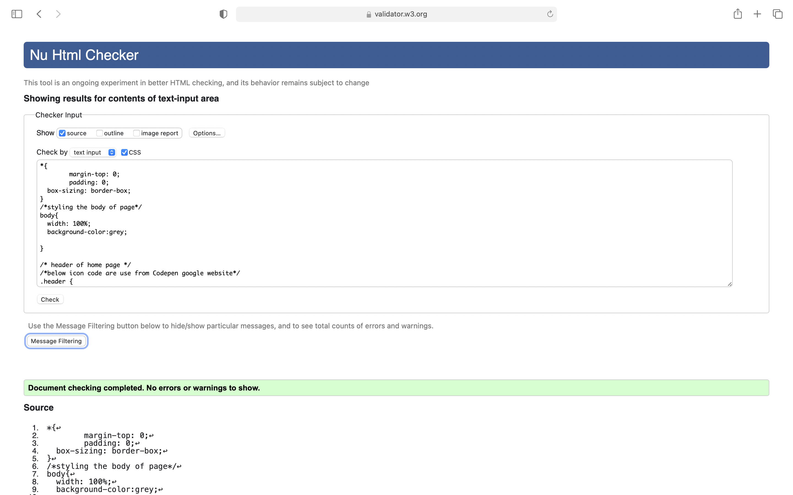

"Experience 0f Learning"
First of all,let me introduce myself Sungava Subedi and I am the student of IT(Information Technology) from NAMI college. After I passed my +2 , I was searching for IT college then I was attracted by the learning process and eniviroment of NAMI college which is totally different from other college . It's been only two month I joined NAMI college.It's just a beginning of learning in this course,Since this month we learning our modules through online classes beacause of pandemic situation. I am very excited to share my physical and online learning experience.
All student have different way of learning.Learning experiences are really meaningful,challenging and interesting.My experience in this course is incredible because I am very interested in Web development.It's include web degins,web programming,web publishing and it usually refers to creating and maintaining website.From the first week we learned about Github and how to create repository in Github account as well as we learn Github mechanism.Thenafter,we learned to create web pages by using html and css ,this was the most excited part because we use different tags and coding to creating, designing, maintaining our webpages.And we observed many others thing like: layouts and positioning,inline elements,block elements,display properties,flex properties and float properties etc.These are the experience of physical class.
After week 6 we learned our modules through online classes.In my opinion,Physical class is much better than online class because online learning is difficult and stressful.I did hard work but I can't complete my work on time because of Internet problem or Electricity problem .Onlineclass teached me one thing that i like is how to manage time for study and other work. And,In this course my online learning experience is good beacause our module teacher teached us very well .We continued our topic and we learned about CSS3 properties,HTML forms and so on.In term of learning ,My best part is to do CSS3 colors,gradient,transform(translate) in tutorial.I really enjoying .For now,My classes are running like this.
Atlast,This is my learning experience in web deveopment,coding,design and debugging process of two month.I feel very lucky to share my learning experiences with you.
Thank you.
#staysafe
"References Of All Html Pages"
Home Page
Reference:
Background Image title:Creative Background Image For Website.
Source of Image:Background image downloaded from google.
Image Link:https://www.google.com/url?sa=i&url=https%3A%2F%2Fwww.wallpapertip.com%2Fwpic%2FbbboRw_website-design-background-creative-background-image-for-website%2F&psig=AOvVaw2qqXESziLCrXvqvDNI5hfw&ust=1622273324181000&source=images&cd=vfe&ved=0CAIQjRxqFwoTCJDSpaft6_ACFQAAAAAdAAAAABAD).
Concept of page:From youtube tutorial and from module tutorial.
Tagline of page:From NIKE(1987)
Hamburger Icon code link:https://www.google.com/url?sa=t&rct=j&q=&esrc=s&source=web&cd=&ved=2ahUKEwiw-6vovPjwAhWbXisKHfSLDDkQFjAAegQIBRAD&url=https%3A%2F%2Fcodepen.io%2Fmutedblues%2Fpen%2FMmPNPG&usg=AOvVaw0bY7JoaoNR6dQUJffzfaXL
source:From google(Website:Codepen)
Portfolio Page
Reference:
Images title:shutterstock,what makes a good or showered in the creative industries.
Source of images:Those placeholder images are portfolio images downloaded from google.
Images Link:https://www.google.com/url?sa=i&url=https%3A%2F%2Fwww.shutterstock.com%2Fsearch%2Fportfolio&psig=AOvVaw2EiwnNRLLYhjktLa3DAScV&ust=1622303171923000&source=images&cd=vfe&ved
=0CAIQjRxqFwoTCJDJgrTc7PACFQAAAAAdAAAAABAD (image1) ,https://www.google.com/url?sa=i&url=https%3A%2F%2Fmedium.com%2F%40l500019575%2Fwhat-makes-a-good-portfolio-or-showreel-in-the-creative-industries-fcce2b2c8dfe&psig=AOvVaw2EiwnNRLLYhjktLa3DAScV&ust=1622303171923000&source=images&cd=vfe&ved=0CAIQjRxqFwoTCJDJgrTc7PACFQAAAAAdAAAAABAI(image 2)
Concept of headline and page:(Effective code academy),Module lecture. Source: Youtube tutorial and module tutorial.
Hamburger icon code link:https://www.google.com/url?sa=t&rct=j&q=&esrc=s&source=web&cd=&ved=2ahUKEwiw-6vovPjwAhWbXisKHfSLDDkQFjAAegQIBRAD&url=https%3A%2F%2Fcodepen.io%2Fmutedblues%2Fpen%2FMmPNPG&usg=AOvVaw0bY7JoaoNR6dQUJffzfaXL
Source of icon:From google(Website:codepen)
Contact Us Page
Reference:
Background Image title:20,418 Contact Us Stock Photos & Royality-Free Images,Creator:utah778,Credit:Getty images istockphoto.
Source of Image:Contact Us image Downloaded from google.
Image link:https://www.google.com/url?sa=i&url=https%3A%2F%2Fwww.istockphoto.com%2Fphotos%2Fcontact-us&psig=AOvVaw3xxcTOBtWIvzbRIx3wzTXX&ust=1622273804527000&source=images&cd=vfe&ved=0CA0QjhxqFwoTCNDS54Tv6_ACFQAAAAAdAAAAABAE.
Concept of page:Coding market & Module lecture.Source:Module tutorial And Youtube tutorial.
Hamburger Icon code link:https://www.google.com/url?sa=t&rct=j&q=&esrc=s&source=web&cd=&ved=2ahUKEwiw-6vovPjwAhWbXisKHfSLDDkQFjAAegQIBRAD&url=https%3A%2F%2Fcodepen.io%2Fmutedblues%2Fpen%2FMmPNPG&usg=AOvVaw0bY7JoaoNR6dQUJffzfaXL
Source of icon code:Google(Website:codepen)
CV Page
Reference:
Background Image title:Abstract Background Vector Graphic Free vector in Encapsuted.
Source of Image:abstract_background_vector_graphic_148408.
Image Link:https://www.google.com/url?sa=i&url=https%3A%2F%2Fall-free-download.com%2Ffree-vector%2Fdownload%2Fabstract-background-vector-graphic_148408.html&psig=AOvVaw0wrpkPec8SXR2TweFItQWX&ust=1622355299142000&source=images&cd=vfe&ved=0CAIQjRxqFwoTCIjqo8ye7vACFQAAAAAdAAAAABAD.
Concept of page: Module Lecture ,Module tutorial and from google.
Source code:https://www.patreon.com /online tutorials from youtube.
Hamburger icon code link:https:https://www.google.com/url?sa=t&rct=j&q=&esrc=s&source=web&cd=&ved=2ahUKEwiw-6vovPjwAhWbXisKHfSLDDkQFjAAegQIBRAD&url=https%3A%2F%2Fcodepen.io%2Fmutedblues%2Fpen%2FMmPNPG&usg=AOvVaw0bY7JoaoNR6dQUJffzfaXL
Source of code:Google(Website:codepen)
Sitereport Page
Reference:
Source:Module Tutorial.
Concept of page:MeMyself
Hamburger icon code link:https://www.google.com/url?sa=t&rct=j&q=&esrc=s&source=web&cd=&ved=2ahUKEwiw-6vovPjwAhWbXisKHfSLDDkQFjAAegQIBRAD&url=https%3A%2F%2Fcodepen.io%2Fmutedblues%2Fpen%2FMmPNPG&usg=AOvVaw0bY7JoaoNR6dQUJffzfaXL
Source of code:Google(website:pen)
"Validation of HTML Pages and CSS"
Home Html and Css

Portfolio Html and Css


Contact Html and css


Cv Html and Css


Conclusion:
This was my first web page.It was little bit difficult to me.But ,At the last I did it.Hope it will be sucessful.I would like to say thank you our college and teachers to giving this exciting assignment.